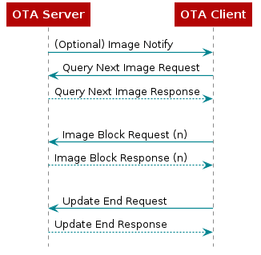

Z-Stack OTA Upgrade¶
Introduction¶
This document is a Developer’s Guide for the Over the Air (OTA) Upgrade Cluster in Texas Instruments Z-Stack solution.
How to Read this Document¶
This document is presented in 3 parts:
OTA Overview gives a functional description of the OTA subsystem.
Sample OTA Applications provides step by step instructions for building, installing, and running the Sample OTA application that comes with Texas Instruments Z-Stack.
Adding Client Functionality to an Application provides step by step instructions for configuring a Z-Stack application to operate as an OTA Client.
Note: This document assumes you are using the CC26X2R1 platform, although the same instructions can apply to any Z-Stack compatible device.
OTA Overview¶
The OTA Upgrade Cluster provides a standard mechanism for wirelessly upgrading a Zigbee device’s firmware. Over the Air upgrade sessions take place between a client and server. The OTA Client downloads an OTA Upgrade Image. The OTA Server hosts OTA Upgrade Images.
Texas Instruments Z-Stack ZCL, Zigbee Cluster Library, provides support for client and server operation of the OTA Upgrade Cluster. The Texas Instruments Z-Stack implementation of the OTA Upgrade Cluster consists of the following components:
ZCL Implementation of the OTA Protocol
OTA Theory of Operation¶
This section provides a simple description of how the ZCL OTA Upgrade Cluster is used to update a device’s firmware. For more detail, see the Zigbee OTA Upgrade Cluster Specification.
Communication via the OTA Upgrade Cluster takes place using the following command messages shown in Figure 72.

Figure 72. OTA Client Querying an Image from the OTA Server¶
The Image Notify message is sent unicast or is broadcast by an OTA Server to notify OTA Clients that new images are available. Image Notify does not contain information about the new images. Image Notify only indicates new images are available. OTA Clients determine if these new images apply to them using the Query Next Image request and response messages.
Periodically, or after receipt of an Image Notify message, an OTA Client sends a Query Next Image Request message to an OTA Server. The Query Next Image Request message contains the version of the firmware currently running on the client. On receipt of the Query Next Image Request, the server decides if an image update should take place and which image the client should update to. The server responds to the query next image request with a Query Next Image Response message.
The Query Next Image Response message may instruct the client to download new firmware, or it may inform the client that no firmware is available. Should a download take place, the client controls the download. During the download, the client sends Image Block Request messages to the server and receives Image Block Response messages from the server with chunks of the upgrade image. The client writes the received image blocks to a secondary storage location, either in the on-chip dual image area or the off-chip flash memory.
After the client has downloaded the entire upgrade image, the client sends the Upgrade End Request message to the server. The server then responds with an Upgrade End Response message. The Upgrade End Response message contains information about when the client should switch to the new firmware. The client may switch to the new firmware immediately or it may be instructed to wait a specified period of time.
In the Z-Stack sample applications, when it is time for a client to switch to the new image, the client writes the external flash according to Boot Image Manager (BIM) indicating new firmware is available, then the client reboots. The BIM on the client sees that the new image is available and copies the new image from external flash to the operational memory space, then the new firmware is started.
OtaServer PC Tool¶
The OtaServer PC tool is the front end of Texas Instruments’ Z-Stack OTA
Server sample application. The OtaServer PC tool requires Microsoft
Windows XP or newer. The OtaServer connects to a device
running the zc/zr_ota_server sample application via a serial port (UART
over USB).
OTA Image Converter Applications¶
Some tools are used to convert application output binaries into Zigbee
upgradable binaries. There are two OTA Image Converter tools which are
used to append the correct header information for performing Zigbee OTA
Firmware Upgrade. First, a .hex file of the sample app
being compiled is used by the oad_image_tool.exe command line tool to
format the binary header according to OAD Image Header for an
upgradable binary read from the external flash. This tool should be run first
to generate the proper .bin file. For more information on this tool, see
OAD Image Tool. After generating the binary file (with _oad.bin
appended to the binary name) the second command line tool, zOTAfileGen.exe,
is used to append Zigbee OTA cluster header at the beginning of the binary
content, producing a .zigbee file which is the file sent to the
OTA Client.
After the binary conversion the format of the file will be the following:
Zigbee OTA Header | OAD header | Zigbee application binary
Note
For these OAD Image Converters to properly append the header information
to the binary, the sample application must have the necessary OTA Client
functionality implemented. You can refer to
Adding Client Functionality to an Application for adding this to your own sample
application, or use the provided OTA Client sample app,
such as zr_sw_ota_client_offchip.
For an example of how these tools are used, see post-build actions of the
IDE in the above referenced OTA Client sample app,
Generate OTA binaries.
OTA Upgrade Image File Format¶
This section contains a simple description of the OTA Upgrade Image file format generated from the zOTAfileGen.exe command line tool.
OTA Update Image files are broken into the following parts:
OTA Image Header
OTA Image Data
OAD header | Zigbee application binary
The Image Header contains the following information about the image:
OTA File Identifier
Header Version
OTA Header Length
OTA Header Field Control
Manufacturer ID
Image Type
File Version
Stack Version
OTA Header String
Image Size
For more information about OAD Image Header, see OAD Image Header.
The Image Data contains the machine code for the new firmware
OAD header | Zigbee application binary from the application output binary conversion
process compatible with BIM specification. This Image Data is the binary
generated from using the OAD Image Tool.
OTA Image Converter Command Line Arguments¶
The first argument to the OTA Image Converter is the BIM compatible
image OAD header | Zigbee application binary, which is generated from
the OAD Image Converter tool. The second argument is
the output directory (the path must already exist).
The following arguments are mandatory in exactly the following order:
Image Manufacturer Identifier
Image Type Identifier
Image Version
Usage:
zOTAfileGen.exe otaFile_oad.bin <output_directory> <manufacturerID> <typeID> <version>
Note
zOTAfileGen.exe is found here: C:\ti\simplelink_cc13xx_cc26xx_sdk_x_xx_xx_xx\tools\zstack\zigbee_ota_image_converter
Image Manufacturer Identifier¶
The Manufacturer Identifier is a 16-bit hexadecimal number that specifies the manufacturer of the device the OTA Upgrade Image is intended for. Manufacturer IDs are assigned to Zigbee device manufacturers by the Zigbee Alliance.
Image Type Identifier¶
The Type Identifier is a 16-bit hexadecimal that specifies the type of device the OTA Upgrade Image is intended for. The Type ID is manufacturer specific and typically corresponds to the model of the device being upgraded.
Image Version¶
The Image Version is a 32-bit hexadecimal that specifies the version of the OTA Upgrade Image.
Z-Stack Implementation of the OTA Upgrade Cluster for Client Device¶
The embedded firmware for the OTA Upgrade cluster for client device in Z-Stack is implemented in the following files:
ZCL functionality
zcl_ota.czcl_ota.hota_client_app.cota_client_app.h
BIM functionality
crc32.ccrc32.hflash_interface_ext_rtos_NVS.coad_image_header_app.coad_image_header_app.hoad_image_header.hoad_switch_agama.coad_switch_agama.h
ZCL Functionality¶
zcl_ota.c and zcl_ota.h¶
The zcl_ota.c and zcl_ota.h files contain the following functionality:
Format OTA Upgrade Cluster messages
Process the incoming image data for Zigbee OTA header, BIM header, and application binary data.
ota_client_app.c and ota_client_app.h¶
The ota_client_app.c, ota_client_app.h, files contain the following
functionality:
Application logic required to query server, download and upgrade to the new image.
Dedicated endpoint definition to host OTA Client application (see
ZCL_OTA_ENDPOINTdefinition).
As these files contains the application logic to perform the upgrade, it’s expected that application developers modify this to meet their specific requirements into how to perform the upgrade.
BIM Functionality¶
BIM files added to the project are to provide a set utilities that allows the proper generation of a binary compatible with TI BIM architecture and validate the binaries received OTA, further details on BIM specification can be found in Boot Image Manager (BIM).
crc32.c and crc32.h¶
These files contain utility functions to calculate the CRC32 of the binary received to validate that the received binary is not corrupted.
flash_interface_ext_rtos_NVS.c¶
This file provides the necesary API to perform the read/write operations of the binary in the storage system (in this case an external flash with SPI interface).
oad_image_header_app.c, oad_image_header_app.h and oad_image_header.h¶
Here is defined the header structure required by BIM to identify a valid
image and its properties. This header is also validated during the OTA
upgrade process in zcl_ota.c. For a detailed description on
the OAD image header structure, see OAD Image Header.
oad_switch_agama.c and oad_switch_agama.h¶
Sample code that implements a mechanism to invalidate the current image loaded into internal flash to allow BIM revert to Factory New Image.
Z-Stack Implementation of the OTA Upgrade Cluster for Server Device¶
The embedded firmware for the OTA Upgrade cluster for a server device in Z-Stack is implemented in the following files:
ZCL functionality
ota_server_data.cota_server.cota_server.hota_common.cota_common.h
Serial interface
MT/NPI files:
C:\ti\<SimpleLink SDK Path>\source\ti\zstack\[mt/npi]
ZCL Functionality¶
ota_server_data.c, ota_server.c, and ota_server.h¶
The ota_server_data.c, ota_server.c, and ota_server.h
files contain the following functionality:
Definitions for the Zigbee Cluster Library, including cluster attributes and simple descriptor.
Application logic required serve upgrade images.
Dedicated endpoint definition to host OTA server application (see
ZCL_OTA_ENDPOINTdefinition).
ota_common.c and ota_common.h¶
The ota_common.c and ota_common.h files contain OTA functionality like
parsing OTA headers that are used by OTA Server applications, the
OtaServer PC Tool, and the OTA Image Converter.
Serial interface¶
MT¶
These files contain the interface used for communication between the host and a Z-Stack project.
NPI¶
These group of files implements the generic serial interface required that passes the serial frames up to the application.
OTA Upgrade API¶
Little interaction between the application and the ZCL OTA is necessary with Z-Stack implementation of the OTA Upgrade Cluster. Z-Stack provides an OTA API to notify the application about the beginning and end of an OTA; to give application the ability to permit/disallow OTA operation; to give the application the ability to send an image notify; and to give the application the ability to query servers for the next upgrade cluster.
OTA Callback Events¶
OTA application can notify about when the OTA upgrade starts or is
completed in the application context inside of ota_client_app.c module
in the function OTA_ProcessOTAMsgs(). The following events are provided
to the application:
ZCL_OTA_START_CALLBACKZCL_OTA_DL_COMPLETE_CALLBACK
Events are sent as OSAL messages with the following code:
typedef struct
{
OsalPort_EventHdr hdr;
uint8 ota_event;
} zclOTA_CallbackMsg_t;
The ZCL_OTA_START_CALLBACK is sent to indicate a successful or failed
attempt to start a download. The ZCL_OTA_DL_COMPLETE_CALLBACK is sent
when a download completes indicating the download completed successfully
or failed to complete.
zclOTA_RequestNextUpdate¶
The zclOTA_RequestNextUpdate() function is called by applications to send
an OTA Query Next Image message to an OTA Server.
The method of discovering servers and determining when to query the
server is left up to the application. In the Z-Stack sample
applications, the application performs a match descriptor request on the
OTA Upgrade Cluster to discover a server. The application then calls
zclOTA_RequestNextUpdate() on all discovered servers until the application
receives a successful ZCL_OTA_START_CALLBACK event.
zclOTA_SendImageNotify¶
The zclOTA_SendImageNotify() function can be called on an OTA Server to
send an OTA Image Notify message.
zclOTA_PermitOta¶
The zclOTA_PermitOta() function can be called to enable or disable OTA
Upgrades. When OTA is disabled, the OTA Client ignores OTA Image Notify
messages and the OTA Server sends no image available responses to OTA Query
Next Image Request messages.
OTA Client Memory Partition¶
When an OTA Client downloads a new upgrade image, it must store the image in secondary storage, where the binary is validated, currently only external flash is supported. Later, when the device reboots, BIM validates the binary received and copies the image from secondary storage into the operational space. The memory partition is fully described in Boot Image Manager (BIM).
Sample OTA Applications¶
The sample application supplied for the OTA update feature are:
zc/zr_ota_server: This example application contains the OTA Server.zc/zr/zed_sw_ota_client_offchip: This example application contains the OTA Client. On-chip versions are also available for CC13x2x7 or CC26x2x7 devices.
Note
While the following sections will explain the process for the CC26x2R1 platform, the same is true for other Z-Stack platforms just by changing the platform name used where CC26x2R1 platform is referenced (device used, file names, paths, etc).
Required Materials¶
The following equipment and software are required for use of the Sample OTA Applications:
A compiler supported by Z-Stack, either:
Code Composer Studio™ (CCS) 12.2.0 or newer OR
IAR Embedded Workbench for Arm 9.32.1 or newer
Two SimpleLink CC13xx or CC26xx LaunchPads
Building and Downloading Target Applications¶
This section describes the process of building and downloading the Sample OTA Application. Two boards need to be programmed. One board will run the OTA Server application. One board will run the Switch OTA application.
Important
All Z-Stack compatible SimpleLink CC13xx and CC26xx LaunchPads come out-of-box with BLE project zero sample app flashed. This sample application, as part of its initialization process, will create a default Factory New image into the external flash of the LaunchPad. The Zigbee OTA application assumes that any Factory New image exist, as the downloaded image will be stored as the second image available (right after Factory New image). If no Factory New image exists, the OTA Client will abort the upgrade process.
If using a custom hardware design including an unprogrammed off-chip external flash device, the BLE Project Zero can be copied as the Factory Image by loading both the ble5_simple_peripheral_oad_offchip_cc13x2r1lp_app_FlashROM_Release_oad.bin from <SDK_DIR>\examples\rtos\<device>\ble5\hexfiles\oad and <device>_bim_offchip.hex from <SDK_DIR>\examples\rtos\<device>\easylink\hexfiles\offChipOad\ccs projects and holding down BTN-1 after a device reset. After these steps are performed, a Zigbee OTA project can then replace the BLE Project Zero. The process is further described in the rfWsnConcentratorOadServer README. Existing off-chip external flash images can be erased with erase_storage_offchip_cc13x2lp.hex from <SDK_DIR>\examples\rtos\CC1352R1_LAUNCHXL\easylink\hexfiles\offChipOad or by holding down BTN-1 and BTN-2 with the BLE project zero and off-chip BIM loaded, as also explained through the UART UI.
To create a Zigbee Factory Image to store in the external flash device instead of BLE Project Zero, define FACTORY_IMAGE inside an OTA client project and call otaClient_saveFactoryImage through application functionality (ex. startup or via push button), build the project, and program the output _oad.bin file instead of BLE Project Zero. By defining EXTERNAL_IMAGE_CHECK the OTA application will first use otaClient_hasFactoryImage to ensure that the off-chip external flash has already been erased or does not have a valid image before overwriting the memory contents.
OTA BIM¶
The OTA Boot Image Manager (BIM) application is only required for the OTA Clients but is not automatically imported with the Switch OTA sample application inside either IAR or CCS. Therefore the BIM project must be loaded into the workspace and downloaded separately. The BIM project can be located here depending on the device used (or use onchip version for respective projects):
C:\ti\simplelink_cc13xx_cc26xx_sdk_x_xx_xx_xx\examples\nortos\CC26X2R1_LAUNCHXL\bim\bim_offchip\<ccs/iar>
This sample application is flashed at the last page of flash along with a modified CCFG registers forcing the start address to be the BIM address, this allows BIM execute when the MCU is powered and it may decide the boot sequence.
The CCFG used by BIM can be located here:
C:\ti\simplelink_cc13xx_cc26xx_sdk_x_xx_xx_xx\examples\nortos\CC26X2R1_LAUNCHXL\bim\bim_offchip\src
And it’s linker file here:
C:\ti\simplelink_cc13xx_cc26xx_sdk_x_xx_xx_xx\source\ti\common\cc26xx\<ccs/iar>
This application must be downloaded along with the Zigbee application that supports the OTA Client (in this case, the Switch OTA application).
OTA Client Applications¶
In order to generate a bootable image, the application binary must have
an offset of 0xA8 (168 bytes) in which the OAD header (header parsed by BIM)
is stored. This offset is defined in the linker file cc26x2lp_ota.cmd
for CCS or cc26x2lp_oad.icf for IAR
along with the flash pages for the application (BIM takes the last page
for itself). Also CCFG is removed from the linker file as the BIM already
defines it. It’s important that the application does not overwrite the CCFG
configuration, as this would prevent the execution of the boot sequence,
which would cause the upgrade process to not work. As reference, the
linker file with the modified flash regions can be found in:
C:\ti\simplelink_cc13xx_cc26xx_sdk_x_xx_xx_xx\source\ti\zstack\boards\cc13x2_cc26x2
To reposition the reset vector defined in the link, the configuration file needs to be modify as follow appending the following definition for the reset vectors:
/*
* Address to place reset vector on target device.
* See the application's linker command file for further section
* information.
*/
m3Hwi.resetVectorAddress = 0xA8;
The oad_app.syscfg with this adjustment to the reset vector is located here
as reference:
C:\ti\simplelink_cc13xx_cc26xx_sdk_x_xx_xx_xx\source\ti\zstack\rtos
The sample application for OTA Client is provided for all three logical devices:
<<<<<<< HEAD C:\ti\simplelink_cc13xx_cc26xx_sdk_x_xx_xx_xx\examples\rtos\CC26X2R1_LAUNCHXL\zstack\<zc/zr/zed>_sw_ota_client<on/off>chip\tirtos\<ccs/iar> ======= C:\ti\simplelink_cc13xx_cc26xx_sdk_x_xx_xx_xx\examples\rtos\CC26X2R1_LAUNCHXL\zstack\<zc/zr/zed>_sw_ota_client\tirtos7\<ccs/iar> >>>>>>> 5a548519 (Changed references of TI-RTOS to TI-RTOS7 and replaced .cfg mentions with .syscfg)
Generate OTA binaries¶
To generate the upgradable binaries in CCS, make sure the last post-build action is set in the project and is configured with the right application parameters:
${COM_TI_SIMPLELINK_CC13XX_CC26XX_SDK_INSTALL_DIR}/tools/zstack/zigbee_ota_image_converter/zOTAfileGen
${PROJECT_LOC}/${ConfigName}/${ProjName}_oad.bin ${PROJECT_LOC}/${ConfigName}/ BEBE 2652 00000001
From which:
BEBE is the manufacturer ID
2652 is the image type (1352 when using a CC1352 project)
00000001 is the version of the application image
Figure 73. OTA Client Post-Build Steps in CCS¶
For IAR, the post-build actions are a bit different:
"$PROJ_DIR$\build.cmd" "$TOOLS_OAD_DIR$" "$PROJ_DIR$" "$TARGET_BPATH$" "$TOOLS_OAD_ZIGBEE_DIR$" "$TARGET_DIR$" "BEBE" "2652" "00000001"
From which:
BEBE is the manufacturer ID
2652 is the image type (1352 when using a CC1352 project)
00000001 is the version of the application image
Figure 74. OTA Client Post-Build Actions in IAR¶
These three parameters are used to generate the OTA header appended to the binary, but the actual parameters used by the application in run time are set by MACROS at compile time in the Predefined Symbols:
OTA_MANUFACTURER_ID=0xBEBE
OTA_TYPE_ID=0x2652
OTA_APP_VERSION=0x00000001
Figure 75. OTA Client Predefined Symbols in CCS¶
Figure 76. OTA Client Predefined Symbols in IAR¶
There are other compilation flags required in order to configure the OTA files to work as a Client device
OTA_CLIENT_INTEGRATEDUsed in sample application files to integrate OTA functionality.SECURITYEnables secure BIM operation.
Once these parameters have been set, the application can be compiled and
flashed onto the device. The .zigbee file will be generated at the
workspace location which can be used later by the server to perform
an OTA upgrade. For information on the correct binary flashing sequence, see
Flashing OTA Client Sequence.
Important
The current Z-Stack solution currently checks to make sure that ZCL OTA
upgrades are performed across the same technology (Zigbee) to prevent
unintentional updates. However, when choosing to swith the application
to a different technology, it is possible to delete
(oad_imgHdr.fixedHdr.techType != OAD_WIRELESS_TECH_ZIGBEE )
inside zclOTA_ProcessImageData from zcl_ota.c to remove
this condition.
In doing so, the device will clearly be switching to a different
technology’s network and not be rejoining the Zigbee network. It is
therefore advisable that the device broadcast a Mgmt Leave Request to the
prior network so that child and route maintenance may occur. The
following can be added to ota_client.c to enable this feature.
void otaClient_loadExtImage(uint8_t imageSelect)
{
//...
if(imageSelect == ST_FULL_IMAGE)
{
if(flash_open() == TRUE)
{
//...
flash_close();
/* NEW CODE STARTS HERE */
if ( extFlMetaHdr.fixedHdr.techType != OAD_WIRELESS_TECH_ZIGBEE )
{
/* Switching to a different technology than Zigbee - leave network first */
zstack_sysNwkInfoReadRsp_t Rsp; //Get local NWK and IEEE address
Zstackapi_sysNwkInfoReadReq( otaServiceTaskId, &Rsp ); //Send Mgmt_Leave_req locally to notify network device is leaving
zstack_zdoMgmtLeaveReq_t zdoMgmtLeaveReq;
zdoMgmtLeaveReq.nwkAddr = Rsp.nwkAddr;
OsalPort_memcpy(zdoMgmtLeaveReq.deviceAddress, Rsp.ieeeAddr, Z_EXTADDR_LEN);
zdoMgmtLeaveReq.options.rejoin = false;
zdoMgmtLeaveReq.options.removeChildren = true;
Zstackapi_ZdoMgmtLeaveReq( otaServiceTaskId, &zdoMgmtLeaveReq );
}
else
{
/* press the virtual reset button */
SysCtrlSystemReset();
}
/* NEW CODE ENDS HERE */
}
}
}
OTA Server Application¶
The OTA Server application uses a serial interface to communicate the host application (which serves the binaries) with the remote OTA Client. The example application can be located in:
C:\ti\simplelink_cc13xx_cc26xx_sdk_x_xx_xx_xx\examples\rtos\CC26X2R1_LAUNCHXL\zstack\<zc/zr>_ota_server\tirtos7\<ccs/iar>
The serial configuration by default for this sample application is:
Baud: 115200
Flow: CTS/RTS
Parity: None
Stop bits: 1
Data bits: 8
OTA Server Compilation Flags¶
The OTA Server application requires the following compilations flags:
OTA_SERVEREnables the OTA Server functionality in zcl_ota.c
The serial interface requires the following flags:
NPIEnables the NPI, which is the generic serial interface.NPI_USE_UARTInstructs the NPI to use UART.MT_TASKEnables main task to parse the incoming serial messages.MT_APP_FUNCEnables processing of application specific serial commands.MT_SYS_FUNCEnables processing of system message commands.MT_ZDO_FUNCEnables processing of ZDO message commands.MT_ZDO_CB_FUNCEnables notifications to host application about ZDO process.MT_NWK_FUNCEnables processing of NWK message commands.MT_NWK_CB_FUNCEnables notifications to host application about NWK process.MT_UTIL_FUNCEnables processing of util message commands.MT_OTA_FUNCEnables processing of OTA application messages.MT_APP_CNF_FUNCEnables Zigbee 3.0 Base Device Behavior commands.
Performing an Image Update¶
OtaServer Operation (Desktop Application)¶
Build and flash an OTA Server device that is a Coordinator or Router.
Select a file method:
Use Image File – Select a single image file for the upgrade. Using this option, it is possible downgrade an image. To downgrade uncheck the “Version Check Image File” in the Options menu.
Use Image Directory – All images in the directory are automatically loaded and the newest compatible image is automatically selected during the Image Notify process. It is not possible to downgrade image files using this option.
Figure 77. OtaServer Desktop Application¶
The File List display area will now show the available image(s) for the updating of OTA devices. Expanding the plus sign on each image provides extra information about the image. It is not possible to select image files in the File List display area.
Figure 78. OtaServer Image Selection¶
Check and modify the Port Settings as necessary. Pressing the Open button will open the port and OtaServer will begin monitoring the OTA Server device. If OtaServer does not see a proper message from OTA Server device, it will automatically close the port and report the issue to the user.
(Optionally) Disable Image Version Checking in the OtaServer:
Options → Uncheck “Version Check Image File”
This can be used to allow more flexible image selection including download older revision files.
Note
When disabling Image Version Checking in OtaServer, the application will not query the binary to upgrade the OTA Client. Instead, the OTA Server device must force pushing the upgrade to the OTA Client. It is recommended you increment the binary version of the OTA binary to a higher number (e.g. 0x00000002) having the binary run through zOTAfileGen.
If your OTA Server device is a Router follow these steps:
The Device List will update within 5 seconds with the PAN IDs.
If any of PAN IDs say “In Network” your OTA Server device has joined that PAN ID.
If that is not the desired PAN ID or you wish to see all the PAN IDs available: Right click on the “In Network” PAN ID, and then select “Leave PAN”. It may take up to a minute for the device to reset and scan for PANs. Right click on one of the displayed PAN IDs and select “Join PAN”. When the PAN ID shows “In Network” you are ready to proceed to the next step.
Right click on the “In Network” PAN ID and select Device Scan.
As nodes respond to the request they will appear in the Device List. Note that only OTA Client coordinators and routers will respond. OTA Clients that are end devices will only appear as they join the network.
If your OTA Server device is a Coordinator, follow these steps:
Press BTN+1 to start BDB commissioning and form the network. Once the network is formed, the Device List will update within 5 seconds with your coordinators PAN ID.
Any nodes that have already joined the PAN will not be displayed. Any nodes that join after OtaServer displays the PAN ID will be displayed. The easiest way to get all the nodes displayed is to right click on the PAN ID that is “In Network”. Selecting “Leave PAN” causes the OTA Server device to reset. It may take a number of minutes for all the nodes to rejoin.
As each node joins, OtaServer will automatically read the attributes of each node. Press the plus next to the node name to see the information.
These remaining steps are for all configurations:
There are two ways to start the image download:
Right click a Device List node and select Image Notify.
<Or>
Right click the “In Network” PAN ID and select Broadcast Image Notify.
The image download(s) will begin shortly and may take quite a while (minutes) to complete.
When the image download is successful, the node is deleted from the Device List and will reappear in a few minutes after the updated device completes its OTA image upgrade process.
Adding Client Functionality to an Application¶
The following steps must to be taken to add OTA Client functionality to a Z-Stack application:
Add the OTA and BIM files
Replace linker, configuration, and board files
Add OTA include directory to the list of include directories
Add the configuration OTA compile flags
Add post-build actions
Ensure the Product Target is correct (e.g. M4F)
Adding OTA Client Source Code¶
To add the OTA source code to an application’s project, perform the following:
Open the project workspace
Create a folder named “ota” inside the “Application” folder in the workspace for OAD files.
This is done by right-clicking the “Application” folder inside Project Explorer and selecting New → Folder.
Add the files by drag and dropping the file into the “ota” folder from Windows Explorer.
crc32.candcrc32.hfrom C:\ti\simplelink_cc13xx_cc26xx_sdk_x_xx_xx_xx\source\ti\common\cc26xx\crcflash_interface_ext_rtos_NVS.cfrom C:\ti\simplelink_cc13xx_cc26xx_sdk_x_xx_xx_xx\source\ti\common\cc26xx\flash_interface\externaload_image_header_app.c,oad_image_header_app.h,oad_switch_agama.c, andoad_switch_agama.h(optional) from C:\ti\simplelink_cc13xx_cc26xx_sdk_x_xx_xx_xx\source\ti\zstack\otaoad_image_header.hfrom C:\ti\simplelink_cc13xx_cc26xx_sdk_x_xx_xx_xx\source\ti\common\cc26xx\oad
Note
For CCS workspace, when prompted to link the files (Figure 79.), do it relative to the project location by pressing OK. It is important to not change the project path or name, otherwise the project will no longer work.
Figure 79. Adding Header Files Relative Path to Workspace¶
Add
zcl_ota.candzcl_ota.hfiles by accessing Common>zcl then right-clicking and deselecting Exclude from Build on the following files inside Project ExplorerAdd the
ota_client_app.candota_client_app.hfiles by drag and drop into the Application>ota folder, located in C:\ti\simplelink_cc13xx_cc26xx_sdk_x_xx_xx_xx\source\ti\zstack\ota
Replace OTA Linker, OAD Board, and Configuration Files¶
Replacing Files in CCS¶
For CCS, to replace the linker file, select cc26x2lp.cmd and delete.
After which you must add the new OTA linker file (cc26x2lp_ota.cmd)
located at OTA sample application such as:
C:\ti\simplelink_cc13xx_cc26xx_sdk_x_xx_xx_xx\source\ti\zstack\boards\CC26X2R1_LAUNCHXL
Figure 80. CCS Linker File to be Used¶
To modify the SysConfig file, select .syscfg and open with the text
editor, after which you must add the following line
m3Hwi.resetVectorAddress = 0xA8;
Replacing Files in IAR¶
For IAR, go to the Options menu of the project, then navigate to the Linker
section and replace the linker file cc26x2lp.icf for the new OTA linker
file (cc26x2lp_ota.icf) located in the same path:
C:\ti\simplelink_cc13xx_cc26xx_sdk_x_xx_xx_xx\source\ti\zstack\boards\CC26X2R1_LAUNCHXL
Figure 81. IAR Linker File to be Used¶
To modify the SysConfig file, select .syscfg and open with the text
editor, after which you must add the following line
m3Hwi.resetVectorAddress = 0xA8;
Add OTA Includes Directories¶
Add OTA Includes Directories in CCS¶
Open the project workspace in CCS
Click Projects → Properties from the menu.
Expand Build → ARM Compiler → Include Options
Add the following directories:
${PROJECT_ROOT}/Application/ota${COM_TI_SIMPLELINK_CC13XX_CC26XX_SDK_INSTALL_DIR}/source/ti/zstack/ota${COM_TI_SIMPLELINK_CC13XX_CC26XX_SDK_INSTALL_DIR}/source/ti/ti154stack/common/oad/CC13X2_CC26X2R1_LAUNCHXL${COM_TI_SIMPLELINK_CC13XX_CC26XX_SDK_INSTALL_DIR}/source/ti/common/cc26xx/flash_interface${COM_TI_SIMPLELINK_CC13XX_CC26XX_SDK_INSTALL_DIR}/source/ti/common/cc26xx/crc
Figure 82. CCS Include Path Menu¶
Add OTA Includes Directories in IAR¶
Open the project workspace in IAR
Click Projects → Options from the menu.
Go to C/C++ Compiler section
Select the Extra Options tab
Add the following directories:
-I${PROJECT_ROOT}/Application/ota-I${COM_TI_SIMPLELINK_CC13XX_CC26XX_SDK_INSTALL_DIR}/source/ti/zstack/ota-I${COM_TI_SIMPLELINK_CC13XX_CC26XX_SDK_INSTALL_DIR}/source/ti/ti154stack/common/oad/CC13X2_CC26X2R1_LAUNCHXL-I${COM_TI_SIMPLELINK_CC13XX_CC26XX_SDK_INSTALL_DIR}/source/ti/common/cc26xx/flash_interface-I${COM_TI_SIMPLELINK_CC13XX_CC26XX_SDK_INSTALL_DIR}/source/ti/common/cc26xx/crc
Figure 83. IAR Include Path Menu¶
Adding Configuration Compile Time Flags¶
Adding Configuration Compile Time Flags in CCS¶
Open the project workspace in CCS
Click Project → Properties from the menu.
Expand Build → ARM Compiler → Predefined Symbols
Add the following compilation flags:
OTA_CLIENT_INTEGRATEDSECURITY(for secure BIMs)OTA_MANUFACTURER_ID=0xBEBEOTA_TYPE_ID=0x2652(0x1352 if using CC1352 project)OTA_APP_VERSION=0x00000001
Figure 84. CCS Predefined Symbols¶
Adding Configuration Compile Time Flags in IAR¶
Open the project workspace in IAR
Click Projects → Options from the menu.
Select the Extra Options tab
Add the following compile flags:
-DOTA_CLIENT_INTEGRATED-DSECURITY(for secure BIMs)-DOTA_MANUFACTURER_ID=0xBEBE-DOTA_TYPE_ID=0x2652(0x1352 if using CC1352 project)-DOTA_APP_VERSION=0x00000001
Figure 85. IAR Predefined Symbols¶
Adding Post-Build Actions¶
Adding Post-Build Actions in CCS¶
Open the project workspace in CCS
Click Project → Properties from the menu.
Select Build → Steps tab and make sure the following post-build actions are set:
${CG_TOOL_HEX} -order MS --memwidth=8 --romwidth=8 --intel -o${ProjName}.hex ${ProjName}${CCS_INSTALL_ROOT}/utils/tiobj2bin/tiobj2bin${BuildArtifactFileName} ${BuildArtifactFileBaseName}.bin${CG_TOOL_ROOT}/bin/armofd ${CG_TOOL_ROOT}/bin/armhex${CCS_INSTALL_ROOT}/utils/tiobj2bin/mkhex4bin${COM_TI_SIMPLELINK_CC13XX_CC26XX_SDK_INSTALL_DIR}/tools/common/oad/oad_image_tool --verbose ccs${PROJECT_LOC} 7 -hex1 ${ConfigName}/${ProjName}.hex -k${COM_TI_SIMPLELINK_CC13XX_CC26XX_SDK_INSTALL_DIR}/tools/common/oad/private.pem -o${ConfigName}/${ProjName}_oad${COM_TI_SIMPLELINK_CC13XX_CC26XX_SDK_INSTALL_DIR}/tools/zstack/zigbee_ota_image_converter/zOTAfileGen${PROJECT_LOC}/${ConfigName}/${ProjName}_oad.bin${PROJECT_LOC}/${ConfigName}/ BEBE 2652 00000001(Replace fieldsBEBE,2652, and00000001with your manufacturer ID, image, and current file version, respectively)
Figure 86. CCS Post-Build Actions¶
Adding Post-Build Actions in IAR¶
Copy the
build.cmdfile from the IAR workspace of a provided OTA sample application into your current project’s IAR workspace.Open the project workspace in IAR
Click Projects → Options from the menu.
Select the Build Actions tab and make sure the following post-build actions are set (Replace fields
BEBE,2652, and00000001with your manufacturer ID, image, and current file version, respectively):
"$PROJ_DIR$\build.cmd" "$TOOLS_OAD_DIR$" "$PROJ_DIR$" "$TARGET_BPATH$" "$TOOLS_OAD_ZIGBEE_DIR$" "$TARGET_DIR$" "BEBE" "2652" "00000001"
Figure 87. IAR Post-Build Actions¶
This will execute the build.cmd batch file that executes the
oad_image_tool and zOTAfileGen with the proper parameters to generate
the upgrade binaries with the specified parameters.
Ensure Product Target is Set to M4F¶
Changing the linker and configuration files for a project, causes CCS to change the project’s product target from M4F to M4.
Click Project → Properties from the menu.
Select General → Products tab and make sure Target is set to ti.targets.arm.elf.M4F.
Figure 88. CCS Product Target¶
OTA Client Application Binary Usage¶
Once the application is ready, it can be compiled as any CCS project. From the build several binaries will be generated:
zr_switch_ota_client_*.hexThis hex file is the plain binary application. The OAD header used by BIM is not formatted yet with proper CRC, but can still be used to flash using CCS or any other flashing tool such as Flash Programmer 2 or Uniflash
zr_switch_ota_client_*.binThis is the raw binary required by oad formatting tool that can calculate the CRC and fit it into the OAD header for BIM to use.
zr_switch_ota_client_*_oad.binThis binary has the right CRC and flags set to be usable by BIM, which is the actual payload of the Zigbee Application binary delivered by OTA cluster during upgrade.
BEBE-2652-00000001.zigbee(varies based on user-defined settings)This is Zigbee formatted binary with the Zigbee OTA header used by OtaServer desktop application.
Subsequent builds of the application should increase the version number of the application by changing the post-build parameters (as indicated in Generate OTA binaries).
Flashing OTA Client Sequence¶
In order to use OTA Client functionality, the BIM must be loaded into the device. It is recommended that prior to loading any application, a memory erase operation is performed on the device to avoid previous configuration or NV usage affects the device.
Erase complete flash
Flash BIM (using the
.hexfile)Flash Client OTA application (using the
*_oad.binwithout overwriting the BIM)Perform any upgrade operation
Note
Uniflash or Flash Programmer 2 must be used to properly perform the task of simultaneously loading the BIM hex alongside the application binary. This will ensure that the CCFG, which is configured by the BIM project, exists for application operation. Failure to do so will result in the application not starting up properly after a software reset or power cycle.
Specific on-chip OTA Considerations¶
On-chip OTA examples enable OTA_ONCHIP using the Image B slot by default. The following modification should be made to the CCS project in order to build an image intended for slot A:
Swap the Region Base of CONFIG_NVSINTERNAL1` and CONFIG_NVSINTERNAL2 from the Syscfg → NVS module.
Change m3Hwi.resetVectorAddress value from 0xA8 to 0x540A8 in the cfg file.
Define OAD_IMG_A=1 in Project Properties → Build → ARM Linker → Advanced Options → Command File Preprocessing (for CCS) OR Project Options → Runtime Checking → Linker (for IAR).
Make sure to clean the project if re-building. Additionally, the on-chip BIM built with the Dual_Image build configuration is required. See the on-chip BIM readme for additional information.
Warning
Z-Stack on-chip OTA project provide the starting flash layout for dual images. The only devices currently able to use this configuration are the CC13x2x7 or CC26x2x7 due to memory limitations. Once a download image has been completed, the BIM will switch the roles of the active and download applications between Image slots A and B. Thus the download application area will be marked as active to become the active application, whereas the active application memory will be prepared for the new download application. This will continue to toggle for each now image downloaded over-the-air. In essence, once a image is first downloaded to Image slot A, validated, and marked as active then the next OTA candidate image should be configured for storage in the Image B slot which was initially active.